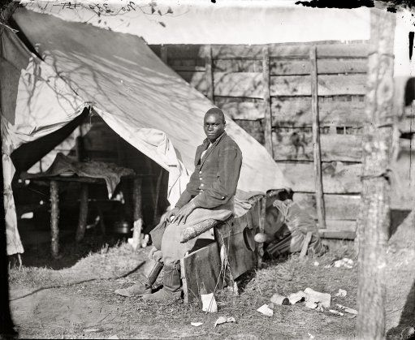

John Henry: The Man

This image may be of John Henry serving at a Union camp. It is a dramatic contrast to the burly hero depicted in his lore.
This is what we know about him:
- Henry was a 19 year old inmate from New Jersey when he was arrested in 1866 for alleged shoplifting at a general store. Historian Scott Nelson suspects that before Henry was incarcerated he worked at a camp for the Union Army because he was approximately 5 feet tall and consequently was too short to qualify for military service. In addition, he lived in a community of predominantly former Union soldiers before his incarceration. Due to the black codes that were implemented after the civil war, he received 10 years for his crime.
- According to records from the Virginia State Penitentiary, a black man named John Henry was leased to the Chesapeake and Ohio Railroad (C&O). During this time, he was sent to West Virginia to drive a steel drill into rock with a heavy hammer and crush rocks on major infrastructure projects drilling through mountains. Consequently, this is where the steam drill was first implemented in the railroad industry.